AVATAR REVIEW · 175
Three floating-arm styles
A stronger skirt hem pattern, plus three different arm shapes. A returns to the original swept direction; B has a soft bend; C is shorter and rounder. Round hands remain available.
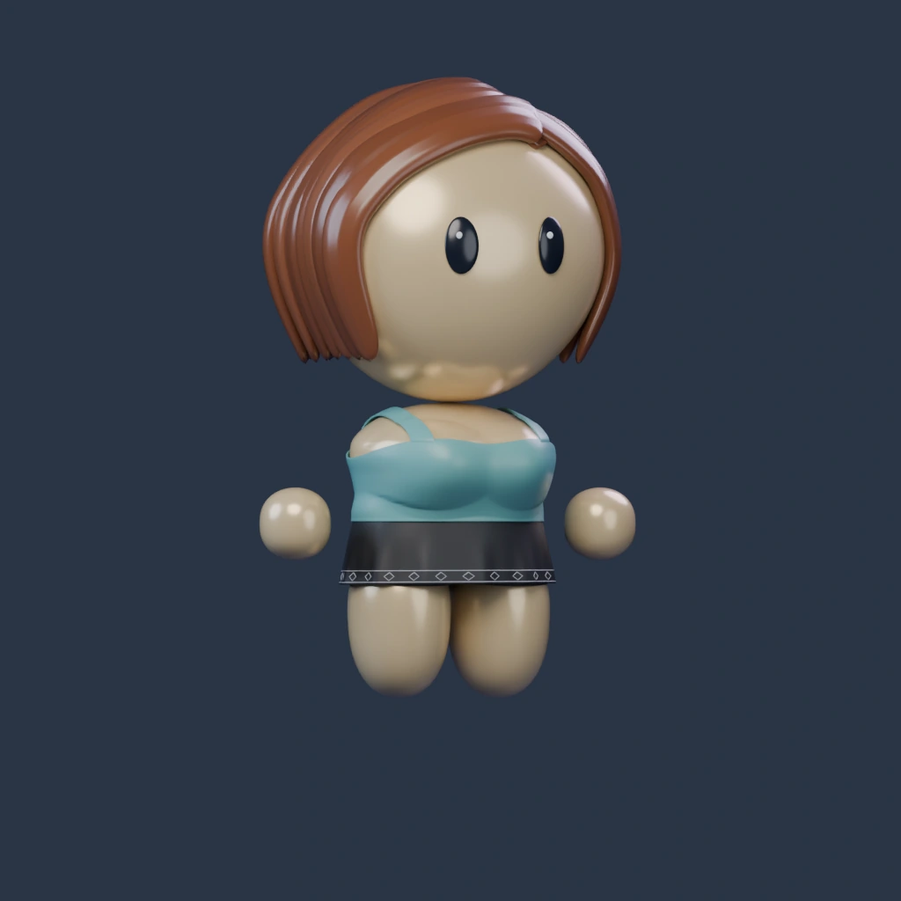
Blender reference · Tank / Black / Light warmLoad 3D to mix outfits, rotate and zoom. Each build remembers its selections.
Use the Arms selector to compare A, B, C and Round hands. Load 3D to rotate, zoom and mix any top. Arms are experimental choices; the body, face, hair and lighting are retained from 174.
Arms · Feminine
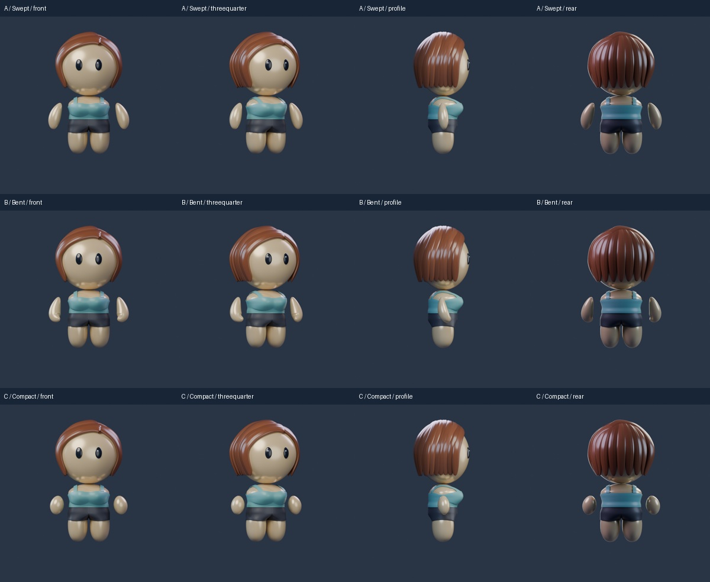
Arms · Masculine
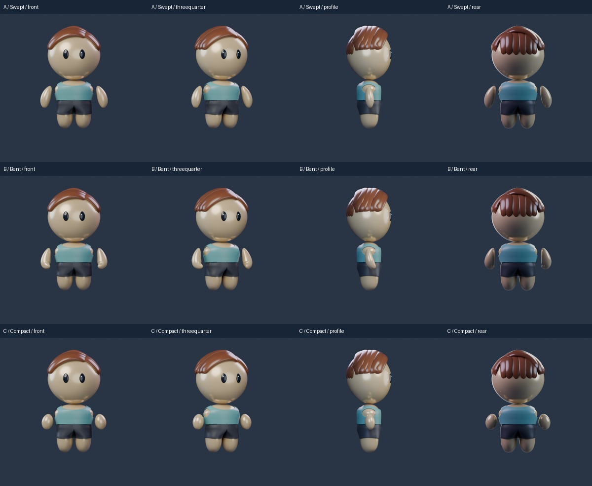
Skirt · stronger hem details
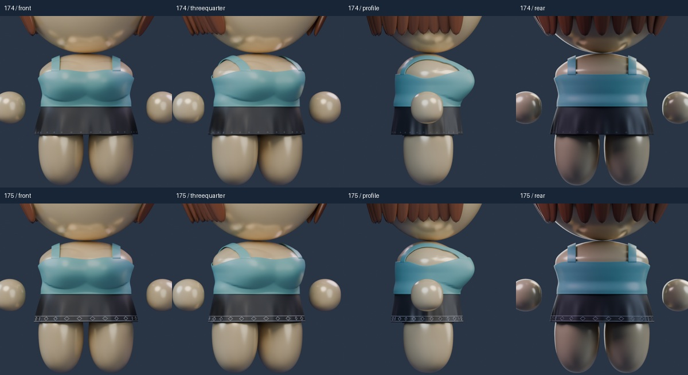
Arm close-ups and sleeve checks
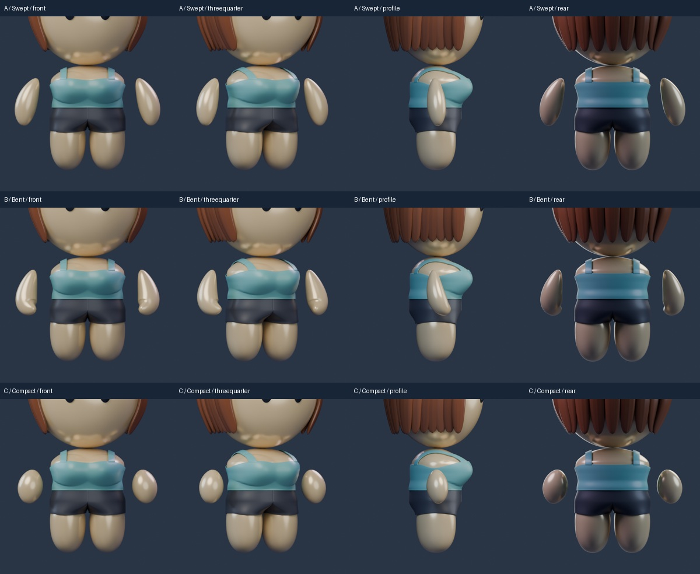
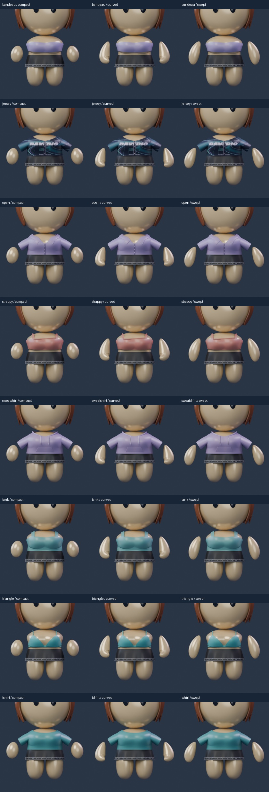
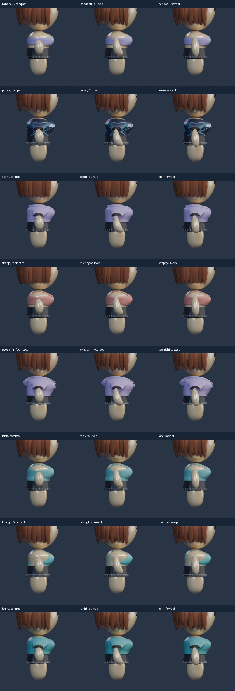
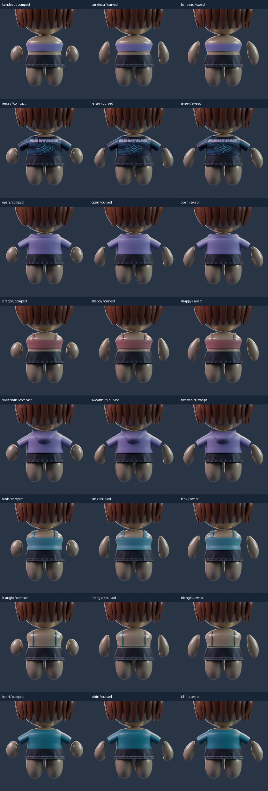
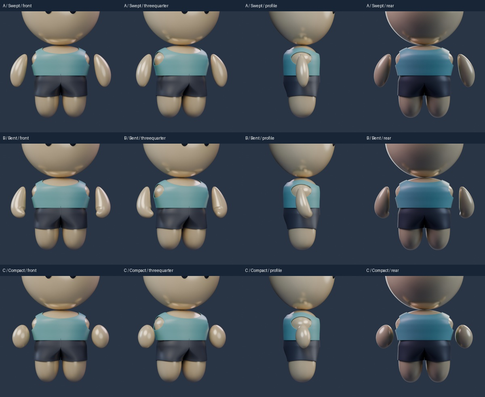
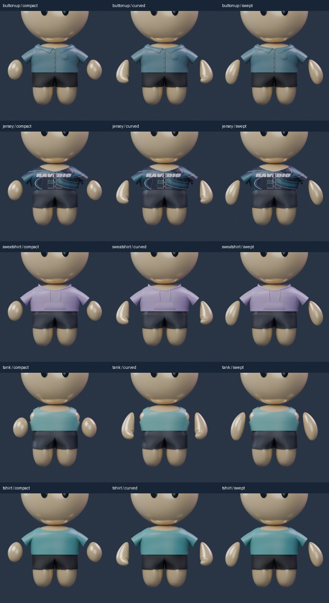
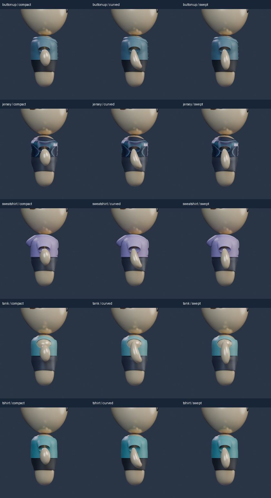
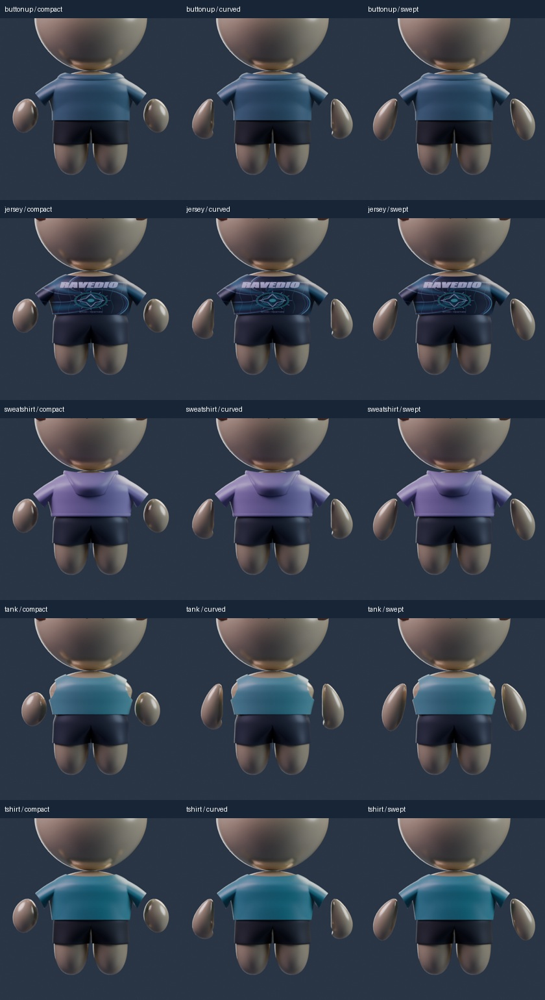
Files and review scope
Native candidates saved and reopened before export. Arm choices are local experiments, with owner selection pending. No profile-byte or application contract changes.